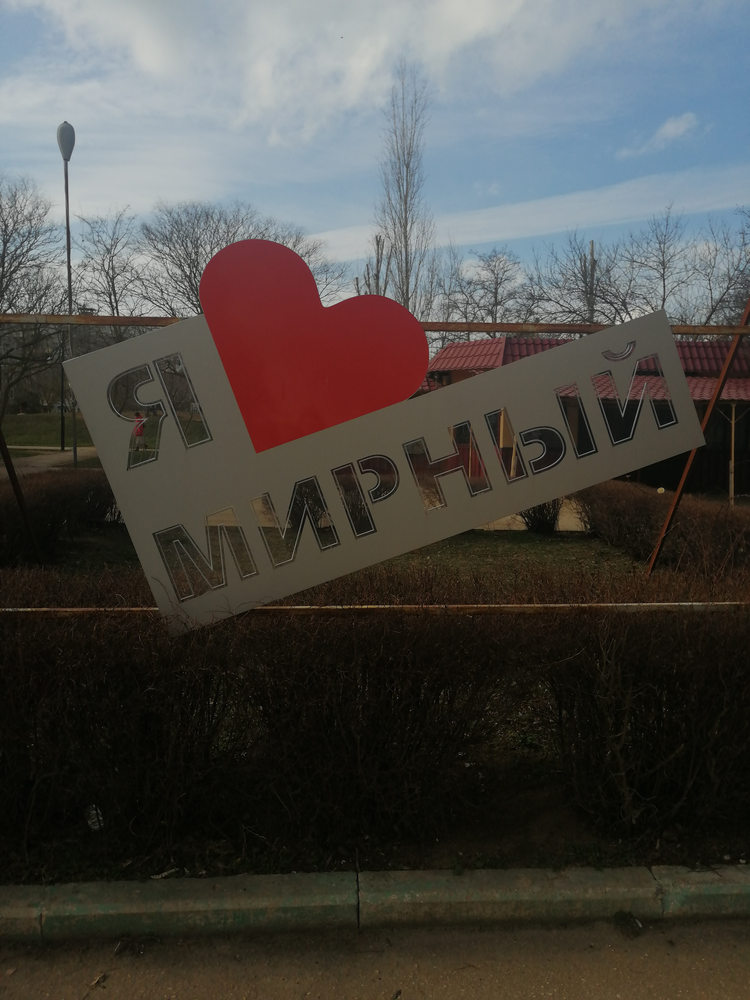

Поповка — Любимая деревня контрастов.
Село Поповка расположено в степной части Крыма, на берегу Чёрного моря. Соседние сёла: Крыловка, пгт Мирный (Евпаторийского горсовета), Штормовое. К северо-западной окраине села примыкает озеро Донузлав, к юго-восточной — озеро Ойбурское. Расстояние до Евпатории — примерно 32 километра по шоссе.
Поповка расположилась самым удобным образом вдоль чистейшего побережья Черного моря. На этом участке побережья расположены самые лучшие в Крыму песчаные пляжи, ширина которых порой достигает 100 м. Крымские Мальдивы — так иногда еще называют наш волшебный край и вполне заслуженно. Прозрачная, чистая голубая вода моря набегает на светлый кварцевый, мелкий песочек необъятного пляжа.
Тепло в этот район приходит рано. В начале мая в море у берега начинают цвести водоросли, именно это придает воздуху особые целебные свойства. В отличие от других городов и поселков Крыма вода в Поповке к середине мая прогревается настолько, что открывается купальный сезон.
Климат здесь сухой и теплый. Насчитывается от 242 до 286 солнечных дней в году. Рельеф в этой местности пологий и достаточно гладкий с мелкой степной растительностью. Воздух обогащен ионами йода и минеральными солями, самая большая их концентрация в воздухе в начале мая, это связано с особенностями морского климата. Степной воздух обогащается морским, и вместе они становятся благодатным «коктейлем», избавляющим людей от целого «букета» бронхо-легочных болезней. Все вместе – чистейшее из-за отсутствия предприятий море, белый кварцевый песок, воздух и лечебные озерные грязи – позволяет попутно с пляжным отдыхом оздоровить сердце и нервную систему, улучшить обмен веществ и решить кожные проблемы, если они есть. Немногие знают, что из всех городов и поселков Крыма только в морской воде Поповки было выявлено высокое содержание минеральных солей и микроэлементов, полезных для человека. Песок пляжа Поповки отлично подходит для псаммотерапии – лечения ваннами из горячего песка.
В летнее время средняя температура воздуха держится в пределах 22-28 градусов, лишь изредка поднимаясь до 35. Но благодаря достаточно высокой сухости воздуха даже такая жара переносится весьма легко. Обычно купальный сезон начинается во второй половине мая, и продолжается до середины октября, средняя температура в это время 22 С, также в этот период созревает большое количество фруктов и бахчи.

Волшебное море в Поповке заслуживает отдельных хвалебных песен и од. Оно на протяжении всей прибрежной территории деревни мелкое, дно песчаное и понижается очень медленно, что делает вход в море удобным даже для детей. Здесь не заметны приливы и отливы, практически не бывает волн, что создает условия для чудесного пляжного отдыха.
«Бархатный» сезон приносит небольшое снижение температуры воздуха, до 25 градусов, а море в Поповке остается теплым до самого начала октября.
Наше побережье отлично подходит для семейного отдыха, особенно с маленькими детьми. Потому как сам вход в море очень пологий, дно песчаное, ровное без ям и обрывов. Мелкий песок незаменим для строительства грандиозных песчаных замков, скульптур и различных пасочек, что способствует развитию детской моторики а так же релаксации для взрослых:)
Поповка — чудесный край с головокружительными закатами, когда раскаленное солнце шипя опускается прямо за линию морского горизонта для того, чтобы минуя ночь, опять взойти на небосклоне, играя неповторимыми красками.
Сумасшедшая энергетика этого места зарядит каждого на целый год. А картинка набегающих на белый песок прозрачно-голубых волн будет на вечном повторе крутиться каждый раз, когда Вы будете закрывать глаза. И мечтательная улыбка не покинет Вас, когда Вы будете вспоминать любимую Поповку.Деревню Солнца и контрастов.
Любимую Деревню на краю Земли и Воды.